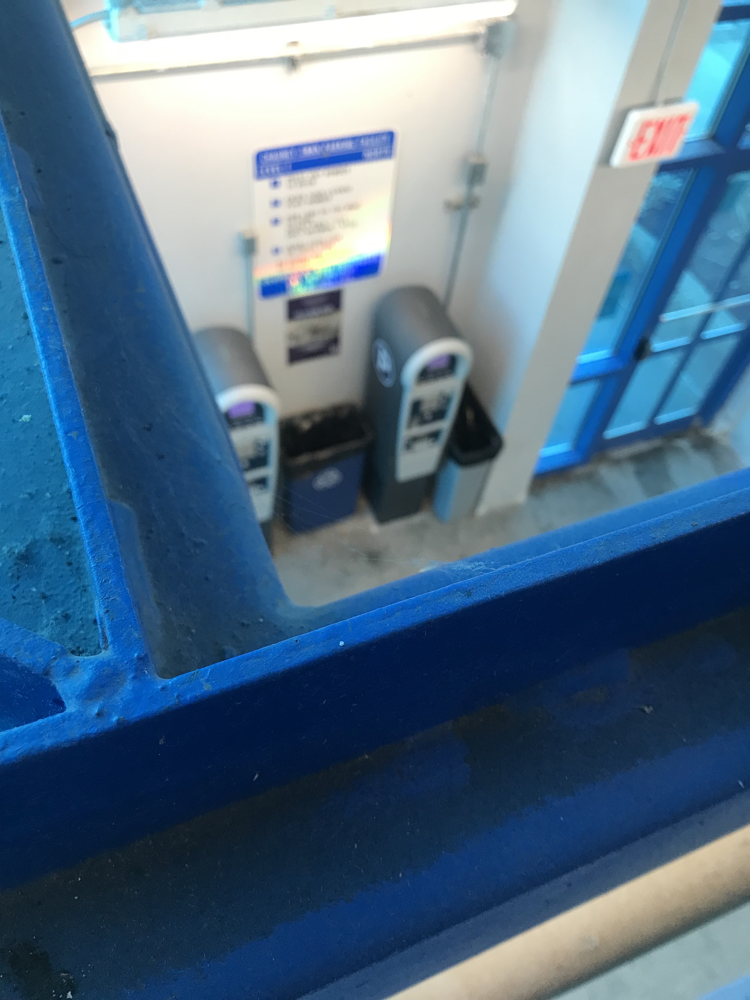
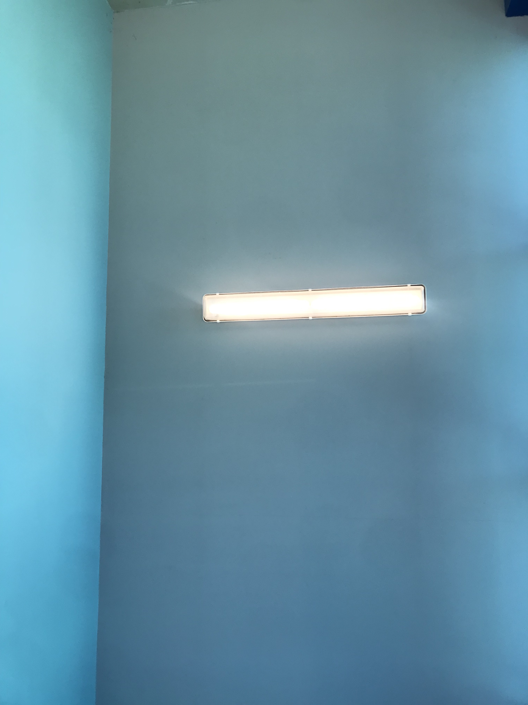
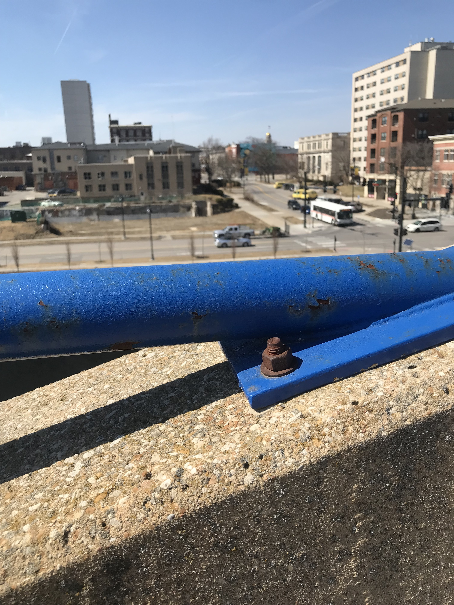

Listen
This piece is best experienced using headphones
Stream the full 27 min piece
Walk to the corresponding parking space numbers below. Go in sequence or choose your own adventure.

Image & Video

An image taken on a stairwell looking down on the ticket machines that can be used to purchase a parking ticket. The view of the machine is partially obscured by a bright blue metal beam that runs in a diagonal from the bottom left of the photo to the top right.

An image of a horizontal florecant light fixture mounted on the wall of the stairwell. It is close to the corner of the wall which is painted in a teal blue.

An image taken from the top level of the parking lot. The foreground is in focus while the background is blurry. The blurry background contains a view of the street, in which there is a bus picking up riders.
Feedback
If you are on instagram take a picture and tag us: @theparkingspaceproject